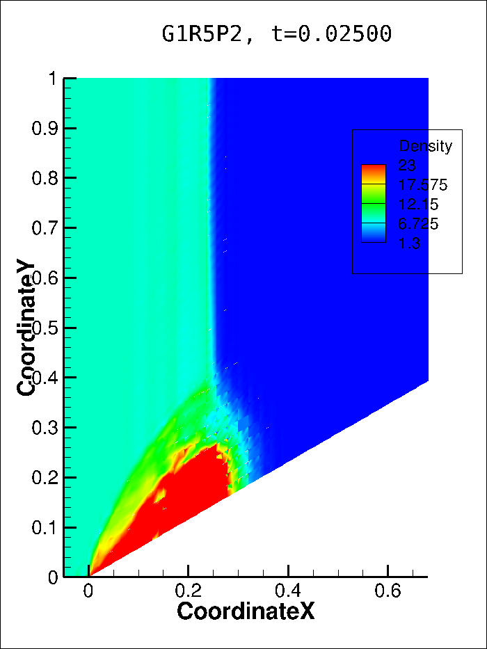
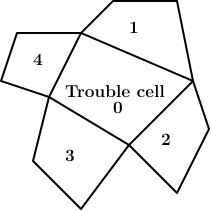
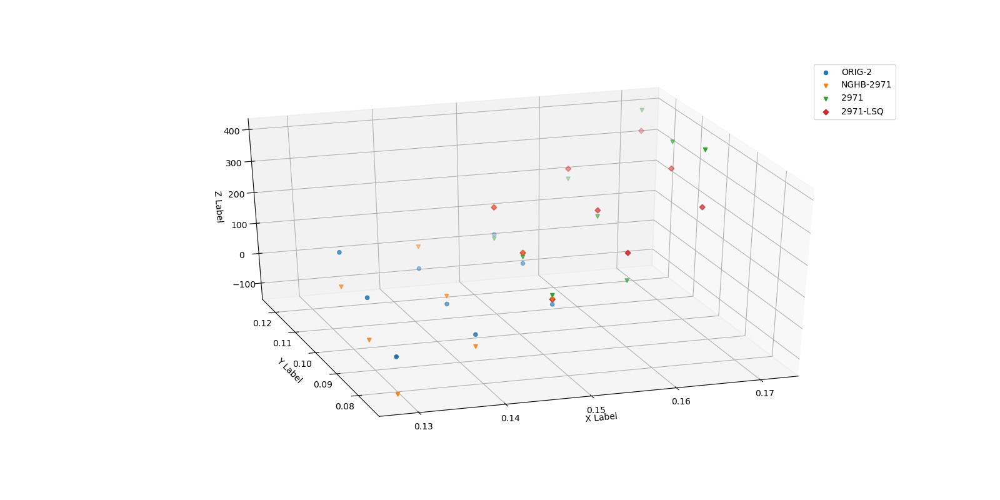

问题总结
我将以下3个WENO限制器实现进了自己写的非结构网格flux reconstruction算法程序里
- 您2013年的simple WENO限制器
- 李万爱、任玉新老师发表于2020年JCP的p-weighted WENO限制器
- 您2020年的multi-precision WENO限制器
虽然是非结构网格，但是2D下只使用了四边形网格，而非三角形网格。 因为要做激波湍流边界层相互干扰问题，暂时没必要用三角形网格。
用于验证WENO限制器的算例是double Mach reflection（DMR）。 DMR算例可以有两种设定，一种是激波倾斜冲击水平平板，另一种是激波水平但平板倾斜成斜坡。 水平平板的设定下网格可以是正交且严格平行于X-Y轴，倾斜平板的设定下网格无法与X-Y轴严格平行。
现在的问题是水平平板设定下，即四边形网格与XY轴严格平行时，WENO限制器的计算结果很好。 但是如果在水平平板下使用非正交的网格，或者在倾斜平板设定下使用平行于平板但非正交的网格，壁面某处就会出现高密度的局部区域，并且越来越大，直至程序崩溃。
首先展示下水平平板设定下使用正交网格，p-weighted WENO限制器在\(h=1/120\)和\(h=1/240\)的P2（也就是3阶空间精度）的结果。

从上面的结果中可以看到，p-weighted WENO限制器精度不错。然而应用于倾斜平板设定中，则会在壁面附近出现局部高密度区，并在向下游传播过程中越来越大，直至程序崩溃。

虽然实现了simple WENO、p-weighted WENO、multi-precision WENO限制器，但是我发现在我的测试里效果最好的应该是p-weighted WENO限制器。 这个p-weighted WENO限制器的设计思想，我理解起来，应该是想法借鉴于您2018年JCP的a new type of multi-precision WENO for finite difference and finite volume。
Simple WENO限制器的效果相对来说较差，所以您16年基于Least square改进了它。
Simple WENO、Least square WENO、p-weighted WENO限制器的框架是相似的，都是将问题网格单元的解多项式（及其子低阶模态）与由相邻网格单元“插值”到问题网格单元内的多项式进行某种权重下的组合。
Multi-precision WENO限制器稍有不同，构造新的多项式时只使用了问题网格单元内的解多项式及其子低阶模态，相邻网格单元内\(0\)阶和\(1\)阶模态组成的线性多项式用来计算对应问题网格单元内\(0\)阶模态的光滑因子。
为了简化和您的讨论，我想只讨论p-weighted WENO，它和您之前的Simple WENO、Least square WENO应该没有本质不同。 对于您最新的Multi-precision WENO限制器，上周四您告诉我之后，我便实现进程序了。但是在DMR算例中的测试没有得到正确结果，如果您想看下结果，我可以再整理后给您汇报。
下面先给您展示DMR算例倾斜平板设定中，计算从\(t=0s\)开始至\(t=0.025s\)时的密度、X方向速度、Y方向速度、压力云图。
可以看到四个变量均在壁面附近出现了局部高幅值的区域，而激波从初始位置\(X=0\)处传播至此时\(X=0.25\)处未发生畸变。 注意此处的平行四边形网格平行于斜坡，并垂直于水平线，而且是单块网格，未进行明显拉伸。
接下来使用相同大小的网格单元测试DMR水平平板设定和倾斜平板设定。 DMR水平平板设定如下图中最左端的图示，完全正交网格。 DMR倾斜平板设定使用了下图中中间图和最右端图中的网格。 中间图和最右端图进行了坐标旋转，使斜坡放置水平，以便和DMR水平平板设定比照。 中间图壁面附近的网格垂直于壁面，以模拟DMR水平设定中的正交网格。
我期待DMR倾斜平板设定（中间图、最右图）的密度云图与DMR水平平板设定（最左图）下的一致。 但是最右图壁面附近密度出现激波，且高密度区域比预期（最左图）要大。 中间图不仅壁面处出现高密度区域，而且入射激波的传播慢于预期。 从以下动画中可以看到，入射激波传播速度慢是由于网格交界面处的影响。 动画文件见附件。
由以上结果，我认为我现在的p-weighted WENO限制器的代码实现对网格及其单元边界的法向方向性是敏感的，虽然该限制器及代码实现理论上适用于非结构网格。
p-weighted WENO限制器的算法简述如下（Simple WENO的算法一并简述）
- 问题网格单元记为\(0\)，其相邻网格单元为\({1,2,3,4}\)。

- 网格单元\(0\)内构造候选解多项式
- Simple WENO直接使用原始解多项式\(U_{0}\)
- p-weighted WENO使用原始解多项式\(U_{0}\)及其由Legendre多项式\(L_{k}\)构造的\(l\)阶模态多项式\(U^{(l)}_{0}\)。 实现方式是：将Nodal DG中位于solution point\((x_{k},y_{k})\)上的解\(u_{k}\)通过Vandermonde矩阵转化为Modal DG中的模态系数\(\hat{u}_{k}\)，然后\(U^{(l)}_{0} = \sum^{l}_{k=0} \hat{u}_{k} L_{k}\)
- 将问题网格单元\(0\)的相邻网格单元\({1,2,3,4}\)内的解多项式“插值”到问题网格单元\(0\)，以相邻网格单元\(1\)“插值”到\(0\)为例，
Simple WENO直接将网格单元\(1\)中的解\(U_{1}\)插值到网格单元\(0\)得到\(\tilde{U}_{1}\)，然后替换单元平均\(\bar{U}_{1}\)为\(\bar{U}_{0}\)。
p-weighted WENO在问题网格单元\(0\)中构造线性多项式\(\tilde{U}_{1}\)，其单元平均为\(\bar{U}_{0}\)，且\(\tilde{U}_{1}\)在网格单元\(1\)内以Least square的方式近似\(U_{1}\)，实现方式是令\(I_{1}\)最小，
\[ \begin{aligned} I_{1} &= \int \left ( \tilde{U}_{1} - U_{1} \right )^2 dxdy = \sum^{N_{SP}}_{k=1} \left ( \tilde{U}_{1,k} - U_{1,k} \right )^2 w_k \\ \tilde{U}_{1} &= \bar{U}_{0} + \hat{u}_{1} L_{1}(x) L_{0}(y) + \hat{u}_{2} L_{0}(x) L_{1}(y) + \hat{u}_{3} L_{1}(x) L_{1}(y) \\ \end{aligned} \]
令\(I_{1}\)最小，即求偏导为\(0\)，
\[ \begin{aligned} \frac{\partial I_{1}}{\partial \hat{u}_{1}} &= \sum^{N_{SP}}_{k=1} 2 w_k \left ( \bar{U}_{0} + \hat{u}_{1} L_{1}(x_{k}) L_{0}(y_{k}) + \hat{u}_{2} L_{0}(x_{k}) L_{1}(y_{k}) + \hat{u}_{3} L_{1}(x_{k}) L_{1}(y_{k}) \right ) L_{1}(x_{k}) L_{0}(y_{k}) = 0 \\ \frac{\partial I_{1}}{\partial \hat{u}_{2}} &= \sum^{N_{SP}}_{k=1} 2 w_k \left ( \bar{U}_{0} + \hat{u}_{1} L_{1}(x_{k}) L_{0}(y_{k}) + \hat{u}_{2} L_{0}(x_{k}) L_{1}(y_{k}) + \hat{u}_{3} L_{1}(x_{k}) L_{1}(y_{k}) \right ) L_{0}(x_{k}) L_{1}(y_{k}) = 0 \\ \frac{\partial I_{1}}{\partial \hat{u}_{3}} &= \sum^{N_{SP}}_{k=1} 2 w_k \left ( \bar{U}_{0} + \hat{u}_{1} L_{1}(x_{k}) L_{0}(y_{k}) + \hat{u}_{2} L_{0}(x_{k}) L_{1}(y_{k}) + \hat{u}_{3} L_{1}(x_{k}) L_{1}(y_{k}) \right ) L_{1}(x_{k}) L_{1}(y_{k}) = 0 \\ \end{aligned} \]
求解上述线性方程组得到系数\((\hat{u}_{1},\hat{u}_{2},\hat{u}_{3})\)。
- 遍历问题网格单元\(0\)的边界，使用边界上的法向\(\vec{n}_{j}\)计算通量雅可比矩阵\(\vec{\vec{L}},\vec{\vec{R}}\)，再将守恒量\(U\)转化为特征量\(W\)。以\(j=1\)，空间离散阶次为\(3\)阶（即P2）为例，
- Simple WENO中，\(\vec{\vec{L}} \cdot \left ( U_{0}, \tilde{U}_{1}, \tilde{U}_{2}, \tilde{U}_{3}, \tilde{U}_{4} \right ) = \left ( W_{0}, \tilde{W}_{1}, \tilde{W}_{2}, \tilde{W}_{3}, \tilde{W}_{4} \right )\)。
- p-weighted WENO中，\(\vec{\vec{L}} \cdot \left ( U^{1}_{0}, U^{2}_{0}, \tilde{U}^{1}_{1}, \tilde{U}^{1}_{2}, \tilde{U}^{1}_{3}, \tilde{U}^{1}_{4} \right ) = \left ( W^{1}_{0}, W^{2}_{0}, \tilde{W}^{1}_{1}, \tilde{W}^{1}_{2}, \tilde{W}^{1}_{3}, \tilde{W}^{1}_{4} \right )\)。
- 计算各多项式的光滑因子
Simple WENO和p-weighted WENO在此差别较小。区别在p-weighted WENO降低了高阶导数，但P2下无区别。
\[ \begin{aligned} \text{Simple WENO}: \beta_{i} &= \sum_{|\ell|=1}^{k}\left|\Delta_{0}\right|^{|\ell|-1} \int_{\triangle_{0}}\left(\frac{\partial^{|\ell|}}{\partial x^{\ell_{1}} \partial y^{\ell_{2}}} \tilde{p}_{i}(x, y)\right)^{2} d x d y \\ \text{p-weighted WENO}: \beta_{l} &= \sum_{r+s=1}^{p} \int_{\Omega_{i}}\left(\frac{1}{(r-1) !(s-1) !} \frac{\partial^{(r+s)} v_{l}(X, Y)}{\partial X^{r} \partial Y^{s}}\right)^{2} d \Omega \\ \end{aligned} \]
但具体计算光滑因子的实现方式有两种
一种是直接采用DG中先在标准域上求导\(\partial / \partial \xi\)，再根据链式法则转化到\(\partial / \partial x\)，这与对流项求导的方式是一致的。 高于一阶的导数以对小一阶的导数求导得到。 具体公式简略；
另一种只求标准域上的偏导，利用Legendre多项式正交基的性质简化计算，
\[ \begin{aligned} \beta &= \sum^{m}_{l=1} \sum^{l}_{a=1,b=l-a} \int \left ( \frac{\partial^{l}}{\partial x^{a} \partial y^{b}} U(x,y) \right )^2 dxdy \\ &= \sum^{m}_{l=1} \sum^{l}_{a=1,b=l-a} \int \left ( \frac{\partial^{l}}{\partial x^{a} \partial y^{b}} \sum^{N_{mode}}_{k=1} \hat{u}_{k} \vec{L}_{k} \right )^2 dxdy \\ &= \sum^{m}_{l=1} \sum^{l}_{a=1,b=l-a} \int \left ( \sum^{N_{mode}}_{k=1} \hat{u}_{k} \frac{\partial^{l}}{\partial x^{a} \partial y^{b}} \vec{L}_{k} \right )^2 dxdy \\ \end{aligned} \]
这样，光滑因子的计算就是模态系数与正交基导数的乘积，
\[ \begin{bmatrix} \hat{u}_{1} & \hat{u}_{2} & \cdots & \hat{u}_{N} \end{bmatrix} \begin{bmatrix} \frac{\partial^{l}}{\partial x^{a} \partial y^{b}} \vec{L}_{1} \frac{\partial^{l}}{\partial x^{a} \partial y^{b}} \vec{L}_{1} & \frac{\partial^{l}}{\partial x^{a} \partial y^{b}} \vec{L}_{1} \frac{\partial^{l}}{\partial x^{a} \partial y^{b}} \vec{L}_{2} & \cdots & \frac{\partial^{l}}{\partial x^{a} \partial y^{b}} \vec{L}_{1} \frac{\partial^{l}}{\partial x^{a} \partial y^{b}} \vec{L}_{N} \\ \vdots & \ddots & \cdots & \vdots \\ \frac{\partial^{l}}{\partial x^{a} \partial y^{b}} \vec{L}_{N} \frac{\partial^{l}}{\partial x^{a} \partial y^{b}} \vec{L}_{1} & \frac{\partial^{l}}{\partial x^{a} \partial y^{b}} \vec{L}_{N} \frac{\partial^{l}}{\partial x^{a} \partial y^{b}} \vec{L}_{2} & \cdots & \frac{\partial^{l}}{\partial x^{a} \partial y^{b}} \vec{L}_{N} \frac{\partial^{l}}{\partial x^{a} \partial y^{b}} \vec{L}_{N} \\ \end{bmatrix} \begin{bmatrix} \hat{u}_{1} \\ \hat{u}_{2} \\ \vdots \\ \hat{u}_{N} \\ \end{bmatrix} \]
其中\(\vec{L}_{1}(x,y) = L_{1}(x) L_{1}(y)\)，即2D下正交基是1D下正交基的张量积。
- 根据光滑因子配合线性权重，组合候选多项式\(\left ( W^{1}_{0}, W^{2}_{0}, \tilde{W}^{1}_{1}, \tilde{W}^{1}_{2}, \tilde{W}^{1}_{3}, \tilde{W}^{1}_{4} \right )\)得到问题网格单元\(0\)内的新的多项式\(W^{new}_{1}\)，再转化回守恒量\(U^{new}_{1}\)。注意此时新多项式只是\(\vec{n}_{1}\)下的重构。
- 线性权重的计算在Simple WENO与p-weighted WENO中有所不同
- Simple WENO中设定相邻网格单元插值来的多项式对应的线性权重为\(0.001\)，问题网格单元内的多项式线性权重为\(1 - 0.001 \times 4 = 0.996\)。 在边界处因为相邻网格单元只有3个，所以线性权重为\(0.997\)。
- p-weighted WENO中线性多项式线性权重为1（不仅包括问题网格单元内的P1多项式，也包括相邻网格单元通过least square构造的P1多项式），而问题网格单元内的P2多项式及更高阶的线性权重为\(10^{l+1}\)，\(l\)为阶次。
- 遍历问题网格单元边界\({1,2,3,4}\)，将得到的新多项式\(\left ( U^{new}_{1}, U^{new}_{2}, U^{new}_{3}, U^{new}_{4} \right )\)取平均得到最终的新多项式\(U^{new}\)。
- 当问题网格单元为边界网格单元时，因为相邻网格单元只有3个，所以只使用周围三个网格单元的信息重构出新的多项式。 也就是说，我在WENO重构中忽略了边界条件的影响。 但其实边界条件内含在边界网格单元中。 我测试了其它方式处理边界网格单元，包括1）将边界网格单元根据边界条件虚拟镜像出一个ghost cell，用于WENO重构；2）用边界面上flux point上的解构造ghost cell solution。 效果最好的还是不考虑ghost cell的方式，也就是现在呈现给您的所有结果所采用的方式。
上述限制器算法中与方向相关的部分有
- 根据网格单元边界的法向计算出通量雅可比矩阵，进而将守恒量转化为特征量；
- 这部分很简单，就是将理论公式在单元边界的法向下应用于单元平均的守恒量计算出特征量。
- 不应该因网格的变化出问题
- 将问题网格单元的相邻网格单元内的解多项式“插值”到问题网格单元；
Simple WENO中，我验证了插值代码的正确性
p-weighted WENO中，我可视化了least square方式构造的线性多项式。 例如下图，

- 图中显示了两个网格单元内的P2解多项式，每个网格单元内有\(9\)个solution point。
- 绿色三角形点是右网格单元内原始P2解多项式分布，红色菱形点是least square构造的P1解多项式分布。
- 橙色三角形是同一个least square构造的P1解多项式在左网格单元内的分布，蓝色圆点是左网格单元内原始的P2解多项式分布。
- 图中直观观察可知P1解多项式分布应该是正确的。
- 对候选多项式计算其光滑因子；
- 我对前述两种计算方式进行了测试，结果显示两者区别并不算太大，细节有不同，但基本结果没有改变。
- 光滑因子的计算公式并不涉及网格方向的变化。
所以现在的问题就是：我不明白问题出在哪里了，想要请您指出来为了修正这一问题需要努力的方向。